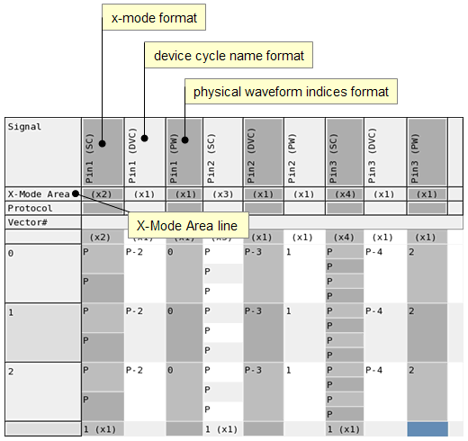

Signal and pin group representations
The Pattern Editor can display a signal in several formats. The format is indicated by abbreviations in brackets:
- (SC): The state characters for that particular signal are displayed.
- (DVC): The device cycle names for that signal are displayed. Note that some graphics may still show the previous DC notation.
- (PW): The physical waveform indexes for that particular signal are displayed.
- (TP): Test Point names.
- Signal (Source): Digital source signal
- Signal (Capture): Digital capture signal
- DIFF: Differential signal
- (TA) Transaction of a protocol
- (Instructions): For bursts and port bursts only. Any entries appear identically in the Instruction header column, which is toggled with .
- (Comments): For your notes. Any entries appear identically in the Comment header column, which is toggled with .
Other displayed items are pin groups, as defined in the pin configuration. The formats of pin groups are:
- (BIN): Binary
- (DVC): Device cycle name
- (Hex): Hexadecimal
- (Oct): Octal
Example
The following figure shows the signals Pin 1, Pin 2 and Pin 3 in three different formats. The signal column headers contain the signal name (for example Pin 1) and the format (SC, DVC, PW).

Functional changes
- Introduced before SmarTest 6.3.2
- SmarTest 6.5.2: Modified or new signal type abbreviations: device cycle name (was DC, now DVC), test point (TP)
- SmarTest 6.5.2: Additional pin group representations: BIN, DVC, Oct
- SmarTest 7.1.3: Additional signal types: Comments and Instructions